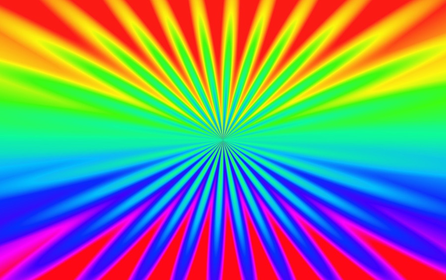

Kies je eigen kleuren, je kan dus voor iedere lamp kiezen welke kleur je ze wil geven. Net zoals bij het 2 kleuren looplicht maken we hier gebruik van jscolor een javascript kleurenkiezer die verassend eenvoudig is om te gebruiken.
Kolom 3